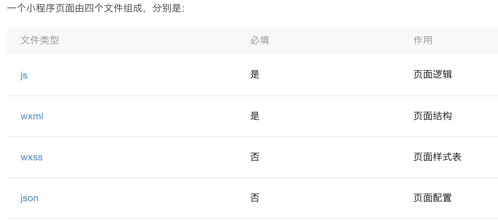

Wechat App
Shallow in (Head), shallow out (First)
Q:什么是微信小程序？
微信小程序是一种全新的连接用户与服务的方式，它可以在微信内被便捷地获取和传播，同时具有出色的使用体验。
Q:为什么会出现微信小程序？
- 订阅号与服务号的现状
- 较H5，Hybrid和Native App
- 微信想建立起一个生态
- 搞事情
生态
生态即生态系统，传统生态系统的定义是指在一个特定环境内，相互作用的所有生物和此特定环境的统称。此特定环境里的非生物因子与其间的生物之间具有交互作用，不断地进行物质的交换和能量的传递，并借由物质流和能量流的连接，而形成一个整体。
软件生态系统
微信想要创建一个生态，即微信本身是一个特定的大环境，大平台。这个环境定义了一些特定的因素，即统一的入口，独立的语言，对UI，运营等方面的严格规范。在这样一个环境中，开发者与平台与用户之间，不断地进行交流与传递，形成一个特定的整体。参考下苹果生态，Google生态，Apach生态。。。。
Hello World!
文件结构
小程序包含一个描述整体程序的 app 和多个描述各自页面的 page。


页面文件

所以我们还是看代码吧.......
回来继续吐槽微信坑
第三方库引入的问题
1，微信小程序的require机制并不是标准的CommonJS。引用需要使用文件路径
2，开发时遇到的问题
提示can not create Function。因为微信小程序并不支持node包导出，没有module和exports对象。
3，现在支持了模块包导出，但是初始化时this指针是空的，蛋疼
方法很多，最直接暴力的方式就是，使用module.exports直接强制导出
其余一些问题
- 页面流程问题，跳转事件第一次触发应该在onReady，之后可以在onShow
- scroll-view不能撑满屏幕
- 下拉刷新"..."只显示一个"."
- UI View滚动时，JS进程被终止，停止渲染
- TabBar的点击事件不能被获取
- .....
deep in...
vue? react?
webView?
WeixinJSBridge?
vue.js
vue.js 数据绑定
react.js
react的组件模式